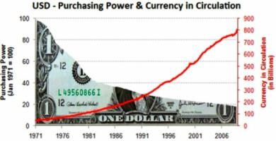

Отделение номинального содержания денег от реального. К чему привело?
Отделение номинального содержания денег от реального, привело к появлению бумажных денег. Фактически деньги - это законченный оформленный знак стоимости. Хотя как самостоятельная единица измеряемая в деньгах не имеют официальной стоимости ( это просто бумажка с картинкой), так как затраты на их печатание незначительны (рабочая сила, свет, обслуживание типографской техники). Они ее приобретают в силу денежного обращения в государстве, в мире. Чего нельзя сказать о золоте, серебре и других драгоценных металлах, которые как раз обращалось по причине своей собственной ценности. Курс бумажной валюты устанавливается в результате деятельности государства. Поэтому «бумажные деньги» и «стоимость» - понятия, существующие исключительно внутри государства (официальная валюта страны). Говоря о бумажных деньгах, следует понимать - это неполноценные платежные средства. На сегодняшний день, они уже не обязательно обеспечены благородным металлом. Государства используют их в двух целях: для покрытия внутригосударственных расходов и для денежного и наличного оборота. Бумажные деньги и их стоимость связаны напрямую с платежами, кредитными деньгами, используются для покрытия дефицита в бюджете, расходов, для накопления и сбережения.Функции стоимости бумажных денег.
Стоимость бумажных денег позволяет не только выполнять функции средства обращения и средства платежа, но быть средством накопления и сбережения платежных средств. К сожалению, бумажные банкноты постепенно обесцениваются. Поэтому мировое сообщество использует чаще всего для накопления и сбережения недвижимость, драгоценные металлы, ценные бумаги. Бумажными банкнотами удобно пользоваться как финансовым инструментом потому, что они практически не имеют трудовую стоимость. Чего нельзя сказать о монетах (золотых, серебряных). Некоторые исследователи мирового финансового рынка считают бумажную денежную единицу символом золотых, как средство презентации последних. Иными словами, в связи с низкой номинативной стоимостью. Бумажная валюта – это неполноценные монеты. Первопричиной обесценивания ценности бумажных купюр является эмиссия (когда чрезмерно выпускают национальную бумажную валюту), а результатом этого считают инфляцию.В бумажных деньгах разная степень стоимости.
Бумажные платежные средства имеют разную степень ценности. Например, самую высокую стоимость приобретают кредитные деньги, функция которых кредитование экономики для роста золотовалютных резервов и для покрытия дефицитов государственного бюджета. Видов бумажных купюр с разной стоимостью несколько. Среди них кредитные банкноты, казначейские билеты, банкноты, ценные бумаги, чеки, векселя. Следует отметить, что любое государство в принудительном порядке придает стоимость бумажным деньгам. Так как в социуме деньги имеют большое значение. На государственном уровне стоимость бумажной валюты определяется согласно закону стоимости ( в сравнении с эталоном стоимости – например, золотой стандарт), а также законом денежного обращения. Эти два фактора определяют реальную ценность бумажной валюты. Следует учитывать факт постепенного обесценения бумажных номиналов в сравнении с товаром, услугами, иностранной валюте, а также – с золотом. Существуют два явления в этой структуре: количество наличных в обороте и реальная потребность в них (учитывая вышеупомянутые экономические законы). А индикатором этой взаимозависимости следует считать – динамику цен на рынке. Говоря о покупательной способности бумажной валюты, следует напомнить, что сами по себе они не могут служить мерой стоимости.Фиатные деньги не имеют самостоятельной стоимости.

Следует отметить, что существует еще один вид свойственный бумажным банкнотам, который с появлением электронных денег уходит на задний план, - фиатные деньги. Это условное платежное средство, которое не имеет самостоятельной стоимости, но вполне законно. Такого рода валюта не обладает ценностью, но все же выполняют функции денег для уплаты налогов, для платежа за товары и услуги на территории государства. Фиатные (символические, бумажные, декретированные, ненастоящие) деньги, не имеющие самостоятельной стоимости или она несоразмерна с номиналом. Когда был откреплен эталон стоимости «золотой стандарт» от бумажных купюр изменилась их сущность. Теперь они не имеют ценности, но способны выполнять функции платежных средств, поскольку государство принимает их в качестве уплаты налогов, а также объявляет законным платёжным средством на своей территории. На сегодня основной формой фиатных денег являются наличные банкноты и безналичные средства, находящиеся на счёте в банке.Безналичные деньги вытесняют бумажные из обращения.
Само понятие «безналичные деньги» условно, так как речь идёт по существу о безналичных (безденежных) расчётах, то есть о расчётах должников с кредиторами без использования наличных средств. При расчётах наличными деньгами собственник денежных купюр (банкнот) непосредственно использует их по своему усмотрению, а при безналичных расчётах управомоченное лицо предъявляет к банку соответствующие требования, исполнение которых от него уже не зависит. Это же относится к денежным единицам электронных, нефиатных платёжных систем. С распространением платёжных карт и законных электронных платежных средств, банкноты постепенно вытесняются из обращения. Безналичные платежные средства так же как и бумажные являются фиатными и не имеют самостоятельной стоимости. Главное преимущество безналичных форм расчета – высокая скорость обращения.